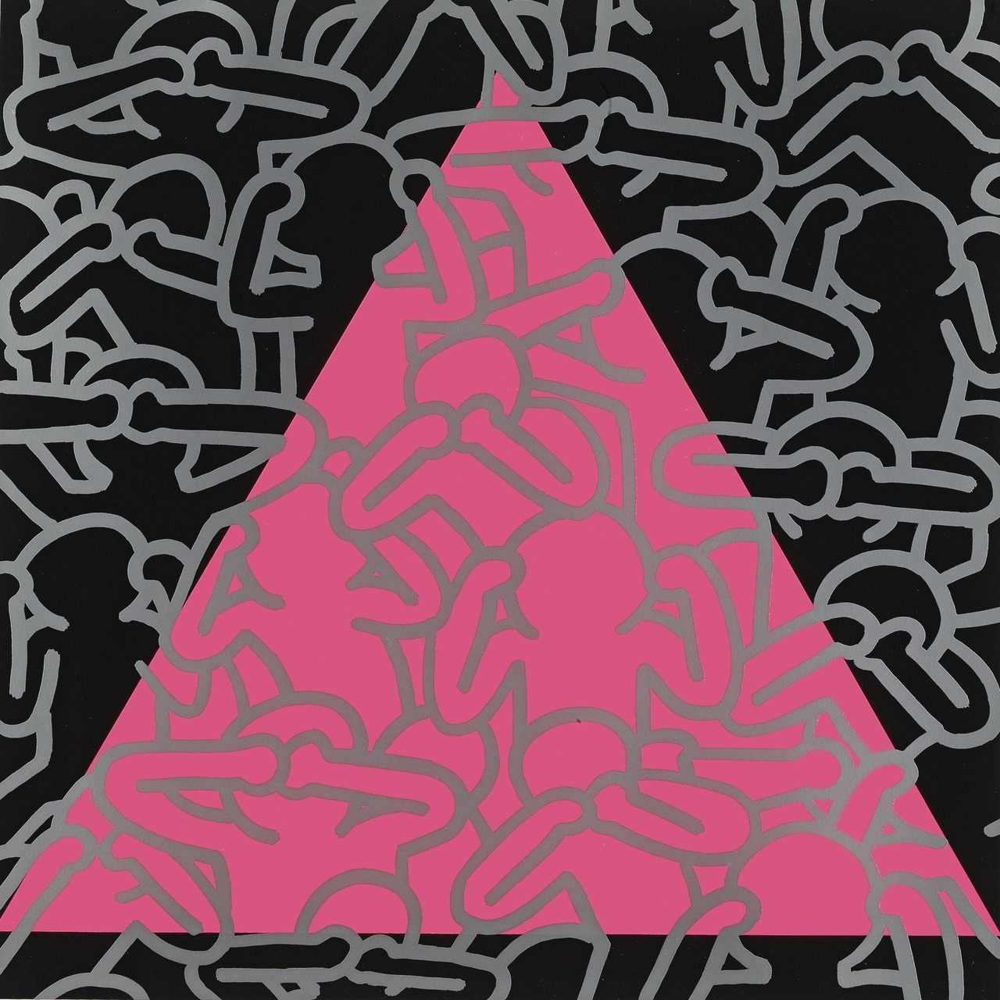
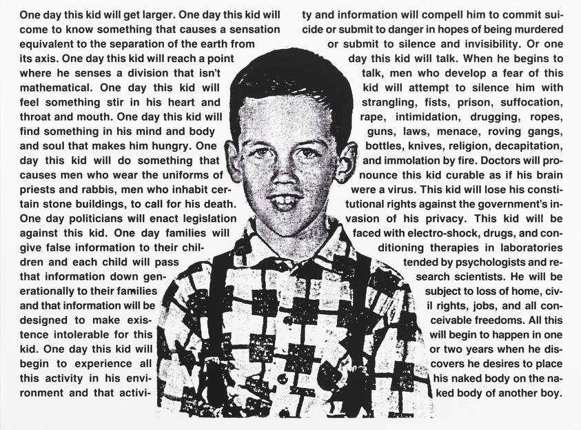
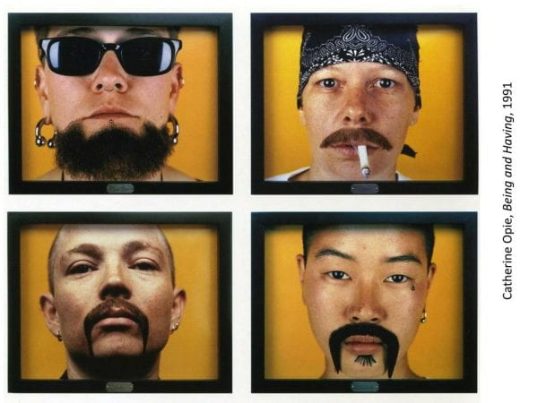

A series of empowering events having a profound impact on queer communities today, the Stonewall Riots, also coined the ‘Stonewall Uprising,’ began in a Mafia-controlled Greenwich Village gay club on June 28th, 1969 after the New York City Police Department raided the Stonewall Inn unexpectedly. Hundreds of people, LGBTQ+ and non-LGBTQ+, fought back, throwing objects and items of all sizes and lighting fires in protest against the oppression of the NYPD and broader society as a whole. The Stonewall Riots are considered to be the pinnacle of queer activism and power, highlighting historical figures such as Martha P. Johnson and galvanizing people and organizations alike to engage in gay liberation movements. This influence can be seen in the tangible groups that formed, like the Gay Liberation Front, and the events in memorium, like “Christopher Street Liberation Day,” that is, the first-ever pride parade in the United States. But what some don’t realize is how these riots have changed the lives of queer artists, both those in NYC and globally, and the trajectory of artmaking. This article seeks to highlight how the Stonewall Riots and LGBTQ+ rights movement have influenced art.
To understand the significance of the riots further, it is necessary to have a view of the political climate at the time, which provides context to the protests. Of course, as you can guess, it was extremely homophobic. A multitude of anti-gay policies were in place during the ’60s, from the prohibition of queer displays of affection to the right to deny a queer person service. Clubs like the Stonewall Inn were a sanctuary, allowing queer people to escape oppressive environments to the best of their abilities. This meant that Stonewall technically violated many existing laws. Thus, it was typical of the police to raid gay clubs. Stonewall was often prepared for police raids, however, because there were a few corrupt police officers who would tip off Mafia-owned establishments, such as the Inn, allowing them to cover up their tracks (i.e. hide alcohol that was not licensed to be served to gay people, calm displays of queer affection, and more.) But the morning of June 28th was an exception. Police arrived, armed, and arrested around a dozen people. Some were arrested for cross-dressing, others for simply being employees of the establishment. Club patrons and the surrounding queer and allied communities were tired of the discrimination the police not only acted upon themselves but encouraged, so they fought back. Activists and neighbors alike stood up against law enforcement, hanging around the bar, waiting to attack. The catalyst of the riot was when a lesbian woman was hit by an officer, forced into a police vehicle, and screamed for supporters to act, inciting a slew of objects: pennies, bottles, rocks, and anything else on hand. This grew into hundreds of people working together to fight against the police, rioting for the rights of queer. What started as a mere outburst catapulted into a five-day period of protests and a movement for the liberation of queer voices. The Stonewall Riots marked a significant turning point in the LGBTQ+ rights movement, and that includes queer artistic expression.
The influence of the Stonewall Riots on art can be divided into four major categories, ranging from the exploration of art as a form of activism to the cultivation of queer-specific creative spaces.
Emergence of LGBTQ+ Art
In the aftermath of the riots, LGBTQ+ artists felt more empowered to express their identities and experiences through art. This led to the emergence of a vibrant LGBTQ+ art movement, which sought to challenge societal norms and prejudices.
This theme can be seen in the works of Keith Haring (1958-1990), a pop and street artist who fought for LGBTQ+ rights. Namely, his piece titled “Silence=Death.” This poster is a monolithic symbol of activism related to the HIV/AIDS crisis. The novelty and boldness of Haring’s works brought attention to the crisis and brought new meaning to art: a tool to amplify the voices of the silenced.

Art as Activism
The Stonewall Riots inspired artists to use their creative expressions as a form of activism. As people became increasingly aware of LGBTQ+ rights issues during and after the Stonewall Riots, art became a powerful tool to form collectives and spread awareness. Being the universal language, art was able to fight against discrimination and advocate for equal rights. Artworks created after the riots often conveyed messages of resistance, pride, and solidarity within the LGBTQ+ community.
This development is exampled by David Wojnarowicz (1954-1992), a multimedia artist who created paintings, installations, collages, film, music, and performances to address LGBTQ+-related issues. He was influenced by political activism, like the Stonewall Riots, and his personal experience with HIV/AIDS in his artmaking. His works spread awareness and served as an extension of grassroots political efforts related to LGBTQ+ rights and social justice. This can be seen in his piece titled “One Day This Kid…” which features a powerful monologue about the challenges of growing up queer and the struggles faced by LGBTQ+ youth.

Visibility and Representation
The riots also brought attention to the struggles faced by the LGBTQ+ community, and art played a crucial role in representing these experiences, in addition to spreading awareness about the issues themselves. LGBTQ+ artists began to create works that depicted their lives, relationships, and challenges, providing much-needed visibility to a marginalized community.
Catherine Opie (b. 1961), a fine-art photographer and educator known for her exploration of queer identity and subculture, creates work that depicts how queer activism and the challenging of authority influenced artmaking in that it sparked an increase in representation and visibility, like her series "Being and Having" (1991). This includes intimate portraits of LGBTQ+ individuals, depicting them in their homes and exploring various aspects of their lives, thus bringing humility to the pain and suffering so many queer people have faced throughout history. Opie’s creations are some of the first modern works exploring queer joy, something that is frequently drowned out in conversations about the pain and suffering of LGBTQ+ communities.

Fostering LGBTQ+ Culture
The riots sparked a sense of community and unity within the LGBTQ+ population, leading to the first-ever Pride parade and the establishment of queer art galleries, theaters, and literary spaces. This cultural development allowed LGBTQ+ artists to thrive and share their narratives more openly. The Leslie-Lohman Museum of Art in New York City is a prime example of one of these spaces. Founded in 1969, this is the first-ever museum in America depicting LGBTQ+ art. The museum has played a vital role in fostering an LGBTQ+ culture by providing a platform for LGBTQ+ artists to exhibit their work and appreciate the diverse and empowering experiences of queer individuals and their communities.
These are just a few examples of queer artists and artworks influenced by the Stonewall Riots and the greater LGBTQ+ rights movement under these broad themes. The events at Stonewall ignited a spark of creativity and activism that continues to inspire artists to use their work as a means of challenging societal norms, advocating for equal rights, and celebrating the richness of LGBTQ+ culture and identity.